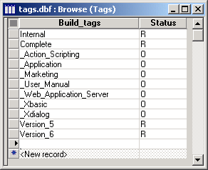

Multi-Select Dialog Alternatives
If you want to present a user with a list of options that allows multiple selections, the following alternatives are easy to implement. Both alternatives are variations of a single design and both assume that you can subsequently use a character list of the selected options.
Sketch a button onto a form.
Enter the button Label, select Use Action Scripting, and click Next >.
Select "Dialog Boxes" from the Category list and "Display an XDialog Box" from the Action list, and click OK.
Select "Check Box-List Box" from the list of controls, enter a name into the Variable Name field. Optionally enter a Prompt to appear to the left of the control. Select "Character" from the Type list, and set a Width in characters. (Your choices now are not critical. You can go back and change them later.)
Click Define List Box.
This step specifies the options that will appear in the control. You can either:
- Enter a list of options, each on its own line
- Have the choices computed automatically
Computed Automatically
The second option can make your application easier to maintain, since the options are simply drawn from records in a table. Select "Computed Automatically". The following is a picture of a browse showing the source data this example uses.

In the Source list, select "Values from a table/set".
In the Table or Set list, select the table that contains the option values. In this example, the current table also happens to contain the option values.
In the Field list, select the field that contains the option values.
Optionally, add a filter expression in the Filter field. For example, you might want to exclude blank values.
Optionally, add an order expression in the Order field. Unless the data has some natural order, it is more user-friendly to alphabetize the option values.
Optionally, check Advanced Formatting? You may want to experiment with the results that you can achieve by coloring alternate rows or changing fonts or point sizes.
Click OK to continue.
Click OK to continue. The next dialog allows you to define the title of the dialog box. It also allows you to add labels or instructions at the top, bottom, left, and right sides of the dialog. This example uses "Check Box - List Box" for the title and "You may select multiple items" for the header. Again, your choices here are not critical. You can come back later and change them.
Optionally, modify the comment that describes the action you are creating.
Click Next >, click Finish, return to the form, and click
 to save your changes.
to save your changes.Switch to form view mode by clicking
 . Click your new button to see what happens.
. Click your new button to see what happens.
Now is the time to change the width of the control or its labels. Go back into design mode, right click on the button, and select Events > OnPush.
Click Edit Action. You can now work your way through the genie again, changing various display attributes of the dialog. The one thing you cannot do is change its height. That comes next.
By default the check box list box control only shows three lines of options. If you wanted 10 lines of options, you would do the following. Select your form, go back into design mode, right click on the button, and select Events > OnPush. Right click the action and select View Xbasic.
Click Copy Code to the Clipboard, then click the
 icon on the
toolbar. Paste the copied code into this new script and save it.
icon on the
toolbar. Paste the copied code into this new script and save it.Change the highlighted value to increase the number of rows of data you want the control to display (This number sets the height of control, not the number of rows its displays.) Save your script with a name that suggests what it does.
Select your form, right click on the button, and select Events > OnPush. Right click the action and select Comment Out. Your action should look like this.
Click
 and select "Scripts" from the Category
list and "Run a Script" from the Action
list, and click OK.
and select "Scripts" from the Category
list and "Run a Script" from the Action
list, and click OK.Click
and select "Scripts" from the Category
list and "Run a Script" from the Action
list, and click OK.Select the new script you created in step 23. Click Next >, Next >, and Finish. Switch the form to view mode and try the button again.
This variation follows the same procedure, but displays a Multi-Select List Box instead of a Check Box - List Box.
To modify the height of the resulting list box, edit the number highlighted below.
Your result should look something like this.
The user's selections are returned as a CR-LF delimited list in the variable that you created in step 5. In the case of the check box - list box, this variable was named check boxes. In the case of the multi-select list box, the variable was named multiselect.